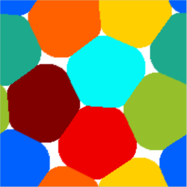
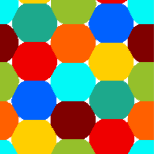
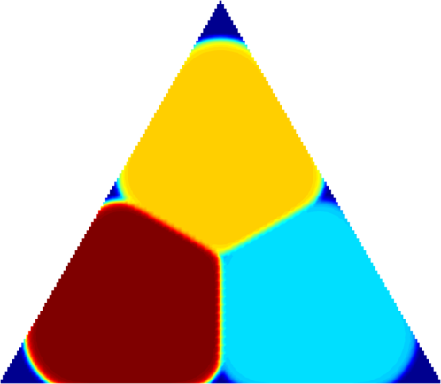
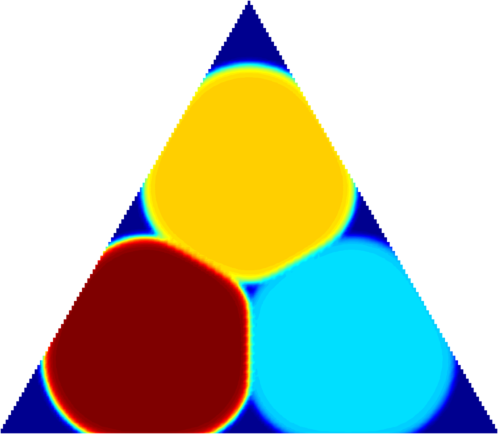
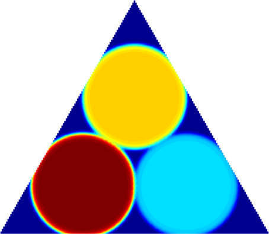
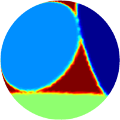
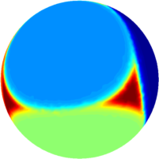
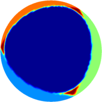

A multiphase eigenvalue problem - numerical computations
This work was inspired from the article Multiphase shape optimization problems by D. Bucur and B. Velichkov. The authors consider the optimization of multiphase functionals for eigenvalue problems. One particular case is the problem $$ \min \left(\sum_{i=1}^h \lambda_1(\Omega_h)+m|\Omega_h|\right), \hspace{2cm} (M)$$ where $\Omega_i$ are disjoint and contained in a bounded open set $D$. The case $m=0$ was studied in a previous work of D. Bucur, B. Bourdin and E. Oudet. If $m=0$ then $(\Omega_i)$ form a partition of $D$. The numerical computations suggest that, asymptotically, the optimal configuration consists of a regular hexagon tiling.
In the case $m>0$ the authors give some interesting qualitative results concerning the optimal configuration, among which they prove that there are no triple junction points, i.e $\partial \Omega_i \cap \partial \Omega_j \cap \partial \Omega_k =\emptyset$ for different $ i,j,k$. This motivated us to try and see if we could reproduce numerically this phenomenon. Below I present some results obtained for different values of $m$ in the non-periodic case. It turns out that non only there do not exist triple points corresponding to the phases, but the same behavior happens near the boundary. This motivated us to search for a proof of this fact, and this can be found in my joint article with B. Velichkov, which can be found here.
| $3$ phases, $m=170$ | $3$ phases, $m=100$ | $3$ phases, $m=80$ |
| $4$ phases, $m=250$ | $4$ phases, $m=150$ | $4$ phases, $m=100$ |
In the non-periodic case, we can see a resemblance with the case $m=0$. For small values of $m$, the configuration resembles a hexagonal partition with small holes near triple points. As $m$ increases, the cells tend to distribute uniformly, as can be seen in the picture with the pentagonal configuration.
 |
 | |
| $8$ phases, $m=500$ | $8$ phases, $m=580$ | $8$ phases, $k=2$, $m=270$ |
 |
 |
 |
 |
 |
 |
← Back to numerical computations
Created: Dec 2014